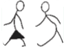

Activity 10
Go outside during the day. Observe the state of the sky, then use the criteria of shape and appearance to identify the current weather conditions, or observe your surroundings using your senses, then identify the current weather conditions by noting:
(a) The amount of cloud cover, or the warmth or coolness of the air.
(b) The type of clouds, or whether you feel sunlight directly on your skin.
(c) The expected weather based on the type of clouds you identified, or whether you feel moisture, mist, drizzle, or rain.